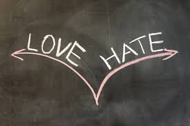

Temos a tendência de nos consideramos, e aos que nos rodeiam, como pessoas de bom carácter. Todavia, são crescentes os estudos que asseguram que ninguém é intrinsecamente bom ou mau, mas sim que toda a gente tem dentro de si uma “mistura de bem e de mal”. Christian Miller, professor de Filosofia e responsável pelo denominado Character Project, apresenta em livro as mais recentes teses sobre o carácter humano. E conclui que o mesmo parece depender menos dos nossos traços de personalidade e mais do contexto em que cada oportunidade surge para termos um comportamento virtuoso ou indigno
POR HELENA OLIVEIRA.
Faça a sua escolha

Love/Hate
O Bem e o Mal segundo a NeuroCiência
Dizem que o amor vem do coração, mas e o ódio? Pesquisadores estão em busca dos fundamentos neurológicos do ódio, assim como da música, da religião, da ironia e de outros conceitos abstratos. A ressonância magnética funcional (RMf) começa a revelar como essa forte emoção se inicia no cérebro.
No ano passado, o neurobiólogo Semir Zeki, do Laboratório de Neurobiologia da University College London, liderou um estudo que mapeou os cérebros de 17 adultos enquanto contemplam imagens de pessoas que eles admitiram odiar. Na tela nota-se que áreas no giro frontal medial, putâmen direito, córtex pré-motor e ínsula medial foram ativados. Os pesquisadores observaram que partes do chamado “circuito do ódio” também estão envolvidas no início de um comportamento agressivo, mas sentimentos intrinsecamente agressivos ─ como raiva, perigo e medo ─ apresentam padrões cerebrais diferentes dos do ódio.
Certamente o ódio pode surgir de sentimentos positivos, como o amor romântico ─ na figura de um ex-parceiro ou rival em potencial. O amor, porém, parece desativar áreas tradicionalmente associadas com o julgamento, enquanto que o ódio ativa áreas do córtex frontal que podem estar relacionadas com a avaliação de outra pessoa e previsão de seu comportamento.
Algumas associações com o amor, entretanto, são surpreendentes, observam os autores do estudo publicado em outubro de 2008 na PLoS ONE. As áreas do putâmen e ínsula ativadas pelo ódio são as mesmas das do amor romântico. “Essa ligação pode explicar porque amor e ódio estão tão intimamente relacionados nas pessoas.”
No entanto, esse estudo inicial não convenceu a comunidade científica de que essas são as raízes neurológicas do ódio. “Ainda é realmente muito cedo”, observa Scott Huettel, professor-associado de psicologia e neurociência da Duke University, não envolvido no estudo. Outras emoções, como felicidade e tristeza, já são mais bem compreendidas, acrescenta. “Até sensações como arrependimento têm coordenadas neurais bem definidas.”
O próximo passo, segundo Huettel, será realizar mais pesquisas sobre aspectos bem específicos e tipos de ódio ─ incluindo ódio contra grupos de pessoas em vez do ódio a uma única pessoa ─ e depois testá-las em diferentes situações. Também será importante estudar casos em que partes do cérebro tenham sido danificadas e tendências emocionais tenham sido alteradas. “Se a ativação positiva e a debilidade, de uma região do cérebro danificada, forem identificadas, já será um bom indício de que se encontrou, pelo menos, uma parte do circuito”.
Para que serve o ódio, ainda é uma questão debatida. Embora alguns argumentem que o sentimento oferece uma vantagem evolucionária ─ poderia ajudar as pessoas a decidir quem confrontar ou desprezar ─, Huettel observa que, da mesma forma que se identifica um circuito neural dedicado, tudo não passa de “um palpite bem dado”.